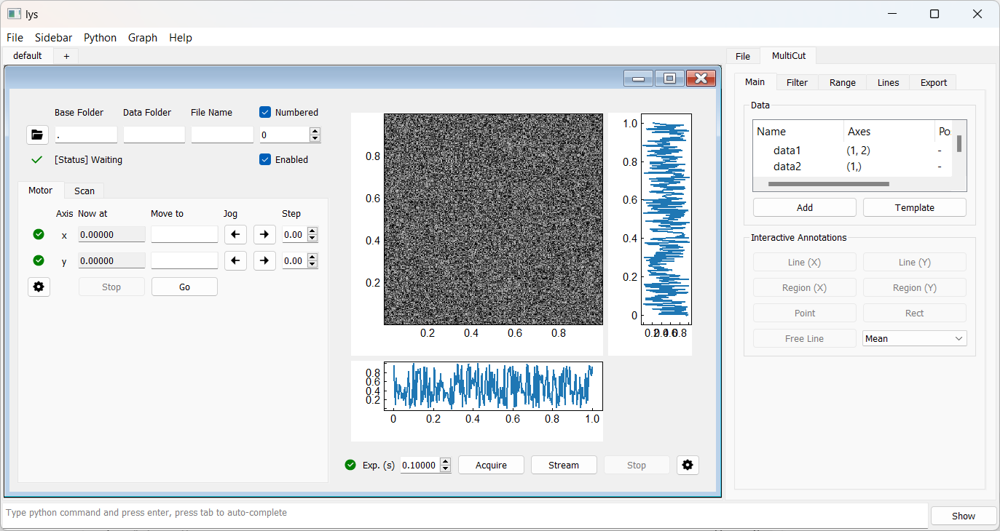

lys_instr documentation
lys_instr is a Python package for building flexible GUIs to automate scientific measurements.
It enables users to quickly create custom interfaces for coordinating multiple devices and managing measurement workflows, with minimal coding required.
What can you do with lys_instr ?
Most scientific measurements follow a move-and-detect pattern—parameters are adjusted via motors or digital controls (move) and data are collected through detectors (detect). A measurement sequence that combines move and detect is known as a scan; a complete workflow may involve multiple nested scans. lys_instr helps you construct, control, and automate such workflows efficiently. In principle, you only need to provide minimal code for device-specific communication—the package takes care of everything else.
Key functionalities of lys_instr:
Asynchronous device control and monitoring
Real-time data visualization and automatic data storage
Efficient management of nested workflows
Standout features of lys_instr:
Lightweight and efficient: designed to be fast and resource-friendly
Modular and extensible: easy to reconfigure measurement workflows directly in the GUI
Seamless integration with data analysis tools: lys (https://github.com/lys-devel/lys)
We recommend following the Getting Started guide to become familiar with this package and referring to the examples there for various use cases.
Contents: